Vote fraud theory: straight ticket vs. direct votes
background
While the 2020 election is behind us, this is not the case with interpretations. Theories abound proposing how and why we can know that fraud is the overwhelming conclusion. One such theory is contained in this video by a Dr. Shiva. The gist goes like this:
- in certain states, one may vote "straight ticket," which means making one choice to select all same-party candidates on the ballot
- one may also "direct vote," meaning one makes individual choices (which may or may not be for all same-party candidates)
- for a given party, there is an expected correlation between the percent of straight ticket votes in an area (e.g. precinct, county) and direct votes for others of the same party; deviating from this correlation implies fraud
Let's take a look!
Several early warning signs stood out to me ahead of actually digging into the proposed theory:
- MIT is slapped all over this, which I thought implied he was faculty until I re-looked in order to write this post.
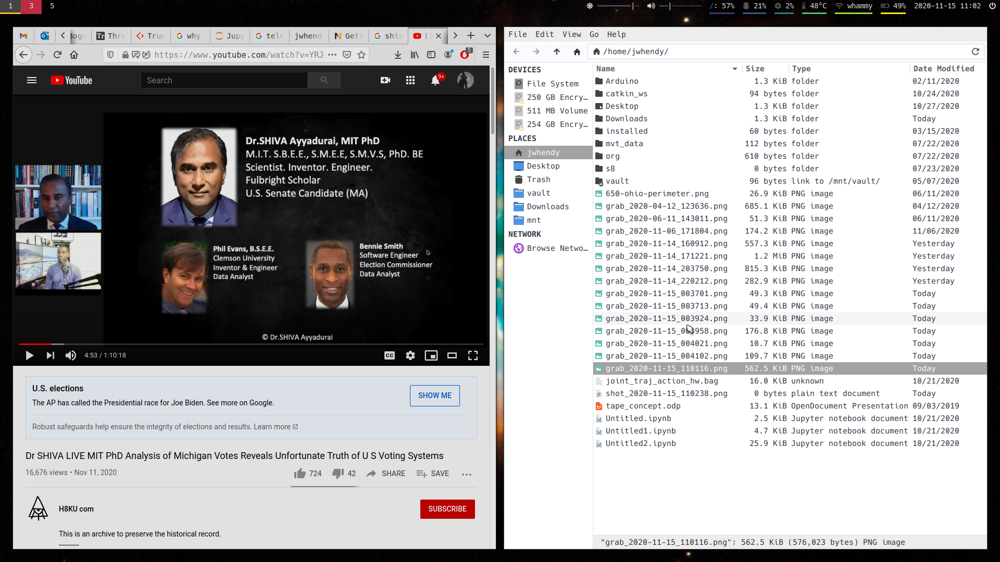
- he includes a long preface citing his pedigree, degrees, and Fullbright scholarship
- the wiki page on him refers to a past history of promoting conspiracies, and falsely claiming to have invented email
- his personal behavior after losing an election is less than stellar
Nevertheless, we can take the data and reasoning on their own merits, though I think past credibility and general conduct is relevant data to consider.
the lead in
Dr. Shiva's strategy begins by planting seeds of doubt. For example, here he points out the lack of traceability and verification abilities for voters. I don't disagree, I just disagree that this is somehow novel this year in particular.
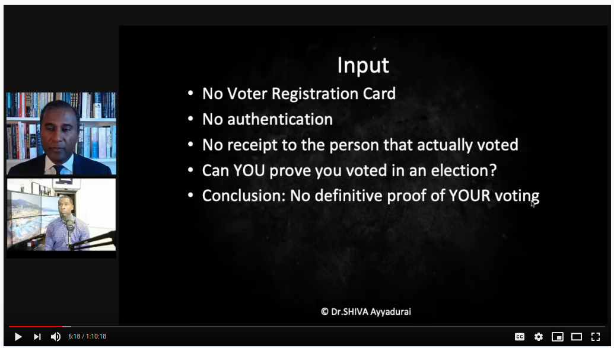
He presents the aility of General Election Management System (GEMS) software to use
weighted votes (where a vote != 1), and to apparently display/calcualte fractional
votes. This work has been done by Black Box Voting, and led me down a bit of a rabbit
hole. I admit that some aspects of the wiki page on Premier Election Solutions doesn't instill
confidence, but this is a far cry from the type of investigation and evidence one would
need to show that these features or vulnerabilities were used to alter results.
Next, we're shown a table that supposedly comes from FOIA requests for various towns in Massachusetts, showing that the number of votes recorded in the MA 2020 primary election exceeded the number of voters on "participating voter lists" for 15 cities/downs he audited.
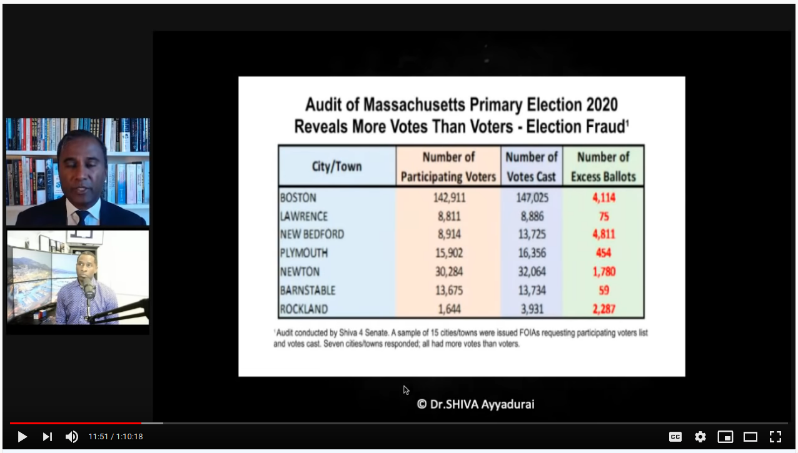
Note that the raw data isn't provided, no context is given (what is a "participating voter list"?), and we have no input from anyone in MA government. Could the list be a past snapshot of prior registered voters compared with actual tallied voters (which include late-registrations)? How do they calculate these numbers? Is the same group/entity providing both numbers? The point is, we don't know. One can suspect all sorts of things, but how can we say what this means conclusively?
On top of that, trying to look around at this issue reveals plenty of fact-checking responses to claims like this, namely that there were more votes than voters. Sure, could be, but we'd need more and we don't have it. These excess vote investigations, by the way, were obtained via his insistence on voter fraud to explain his loss when running in the MA primary for state senator. When he lost, he filed a request to see ballot images, was told that only the original ballots are kept per law, and he subsequently began falsely claiming on twitter that MA destroying ballots (and ranting via bullhorn in the streets). When his posts were taken down as disinformation, he sued for $1.2B in damages…
Moving on, he begins discussing what % votes over time should look like, using this example from Franklin county, which settles in early and stays constant:
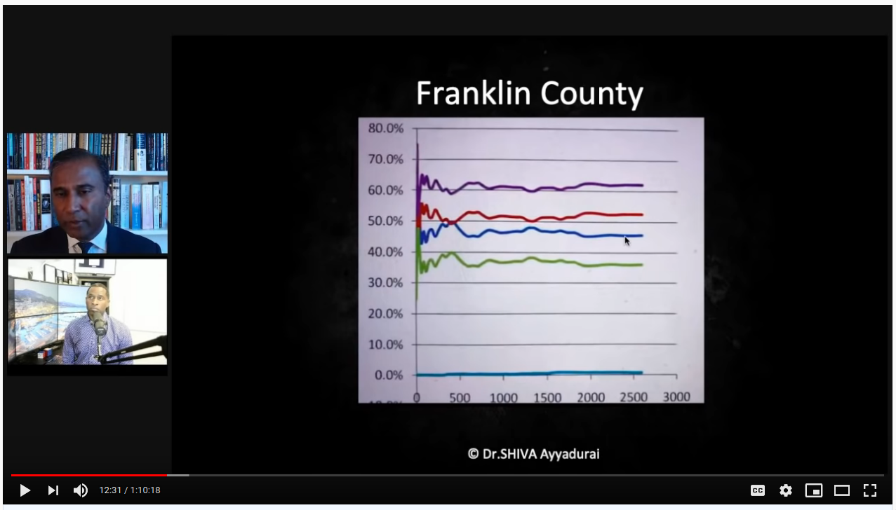
He then compares this to a "suspect" plot, which he says diverges suspiciously:
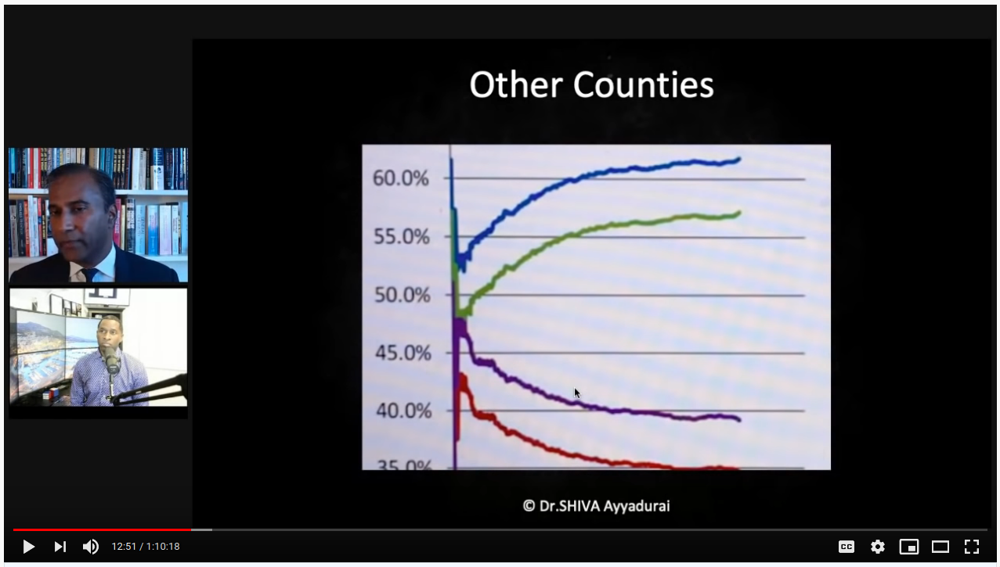
There are a few problems with this.
- note how close Franklin is to 50/50 and the margin is <10%. As votes come in (which can be thought of as randomly sampling the population), further sampling will not drastically affect the net result if the true breakdown is something like 47% vs. 53%.
- in the second graph, the margin between red/blue is >25%, so there's no way that early ratios will reflect the end state (mandating divergence). In other words, in a bag with 600 blue marbles and 350 red, the early results will start much closer to 50/50 before settling at their true distribution
- the lines are smooth for Franklin and the x-axis is shown; the lines are jittery for the other county, and we are not shown the x-axis. This tells me that we are seeing an zoomed in view. Franklin county would look pretty wonky we zoomed in on <500 votes, too.
- as more of a continued gut feeling/indirect assessment about what I'm seeing, the plots are pictures of a computer screen vs. included directly in the presentation, which is lower than I expect for MIT PhD standards
I admit I didn't watch the full end of this video, so I'm not sure if these patterns are revisited, but they originate from the work of Phil Evans. Having skimmed this… I find it bizarre. I would describe the entire hypothesis as: "I can't explain reality, therefore fraud." Really, take a look yourself:
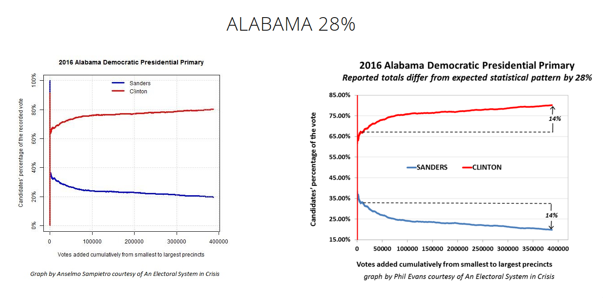
I think I'll revisit this at a later time in more detail, as this isn't at the heart of Dr. Shiva's argument. For now, here's the synopsis of the method from his report:
The technique [Cumulative Precinct Vote Tally Chart, CVT] is based on the Law of Large Numbers. Investopedia provides a straight-forward explanation, “A principle of probability and statistics which states that as a sample size grows, its mean will get closer and closer to the average of the whole population.” The CVT graph shows the precincts added together cumulatively from the smallest to the largest along the X-axis. On the Y-axis it shows the two candidates’ percentages.
The problem is, the heavy R leaning in small, rural areas, and strong D leaning in cities is well known. Depending on a state's overall population, ratio of total city vs. total rural population, overall leaning, and the dynamics of each year's candidates… these kinds of curves could literally be anything when plotted from smallest to largest precinct.
In the AL example above the dotted reference lines amount to this hypothesis: "the end results should be about the same as the result very early." But the problem in expecting convergence "closer and closer to the average of the whole population," is that the population is bi-modal. Here's the 2020 county level breakdown for the 2020 presidential election in Alabama (62.1% Trump vs. 36.5%):
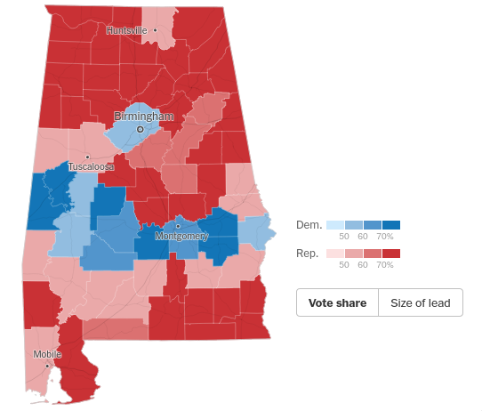
By exploing the NY Times results for AL, Jefferson County (Birmingham) was 55.7% Biden vs. 42.6% Trump, with over 300k votes. Surrounding counties favored Trump anywhere from 75/25% to 95/5%, but with populations of 7-40k. This doesn't even pass the smell test. The state is not one bag of marbles; you're sampling n times from one bag containing 90 red and 10 blue, then switching to a much different bag and sampling 10x the number of times.
I happen to have the county level presdential election results, so here's Alabama to show exactly what I mean:
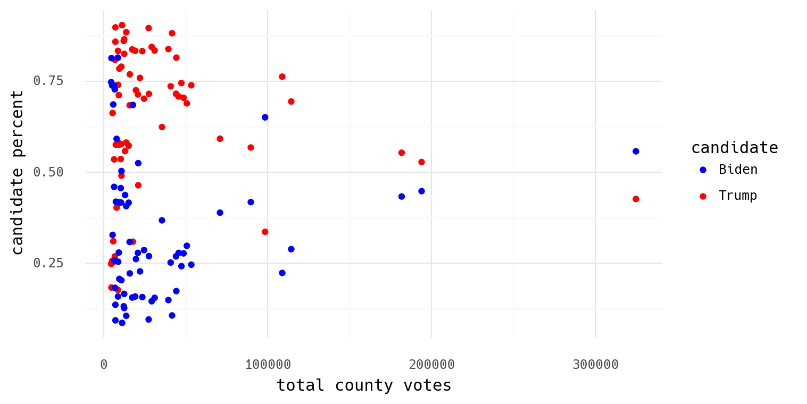
I hope to come back to this in detail some other time, but for now I wanted to illustrate preliminary thoughts on his collaborator's idea.
the meat
Here is the central theory presented, which has already (4 days later as of now) been parroted around as proof of 69,000 switched votes (or is it 138,000?).
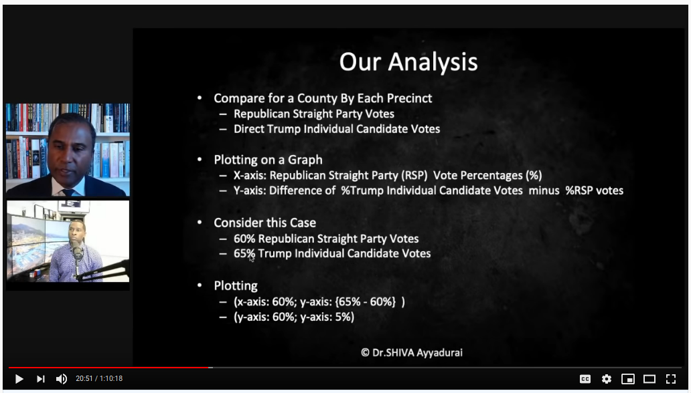
The observation works like this:
- in various Michigan precincts, they looked at straight party % (percent of voters choosing to vote straight-R) vs. % Trump votes for those who did not vote straight-R (referred to as direct votes)
- on the x-axis is straight-R %
- on the y-axis is Trump % among direct votes minus straight-R %
This is what Dr. Shiva says these plots should look like:
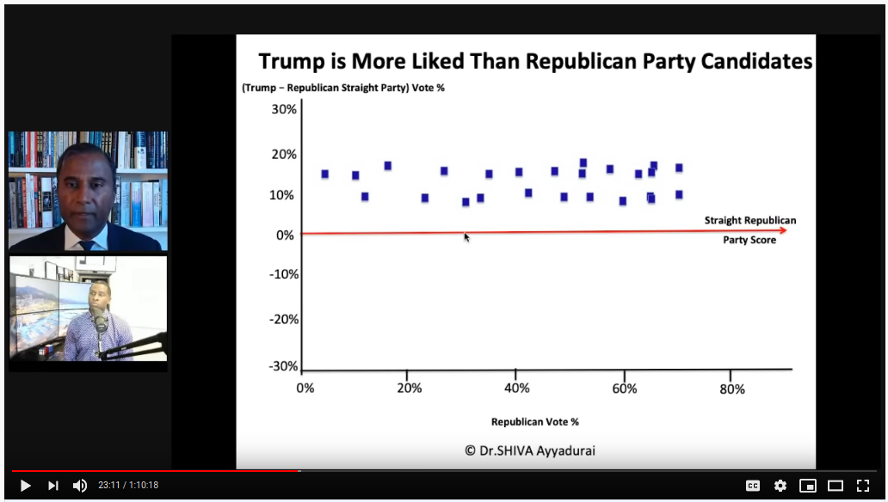
The layman's explanation is that straight-R % in a precinct is a measure of "republican-ness." If you have a very high % of straight-R voters, the precinct population is very R loyal. For the direct voters, should expect this loyalty to be similar, so you should expect a constant offset. So among direct voters, Trump support might vary +/-10% vs. the straight-R %, and that level will be consistent across all state's precincts.
Compare this to what he presents as a suspect precinct:
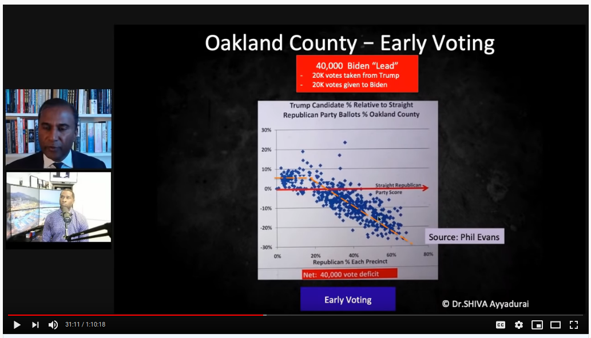
He points out that the fit line features an early plateau and then a steep decline. Similar to Phil Evans' theory, the claim is that Trump's positive margin in low straight-R % precincts should be representative of the whole population and carry across the board. He doesn't show his work, but I think he uses the early plateau vs. the downward trend line to calculate and estimate of ~40k lost votes. Is this reasonable? Not remotely.
For one, what are we really plotting? We have y-x vs x; what should that
look like? For both straight-R and direct-R voters, we have a range of 0-100%. The cells
below show what the extremes of y will be for each combination (direct-R - straight-R):
| straight-R=0 | straight-R=100 | |
| direct-R=0 | 0-0 = 0 | 0-100 = -100 |
| direct-R=100 | 100-0 = 100 | 100-100 = 0 |
Before we apply any background knowledge or data analysis to this, we know that we have an inherent relationship in the data because of how he's chosen to plot it:
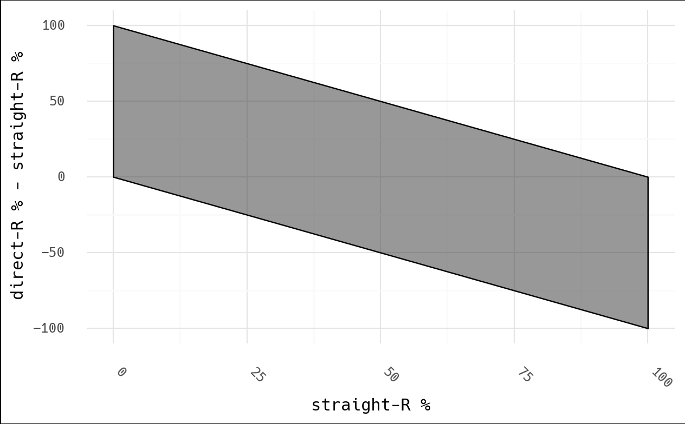
One can intuitively see this, as well. In a county with no straight-R votes… surely
someone will vote for Trump, right? Thus direct-R - straight > 0. As we increase in
straight-R votes, two things happen:
- straight-R % begins to exceed the general population sentiment (90% straight-R is higher than Trump support at large), so the chance of direct-R < straight-R increases
- in addition, high straight-R % means a very low relative number of direct voters, so the denominator becomes small, and even a few Biden votes makes for a much lower direct-R %.
The last point is key: say we have 100 voters in a 90% straight-R precinct. This only leaves 10 direct voters, and imagine that 3 vote for Biden. This precinct is 97% Trump (90 direct + 7 direct out of 100), however due to the choice of this metric, it will show a -60% Trump "hit" (30% direct - 90% straight). Can you see how this graph isn't what it seems? I didn't see how they calculated "stolen" votes, so I would be curious if they factor in the small direct-R population (loss of 3 votes?) or consider the "deficit" vs the total voters (a loss of perhaps 60 votes).
This premise also ignores that as you increase in straight-R percentage, some of those choosing to vote direct are specifically doing it to vote against Trump. That is to say, the direct voting group is expected to lean more toward Biden than the overall straight-R percent.
Next, Wayne county is shown as an example where "the algorithm" is not detected, and where Trump even managed a "boost" of 10%:
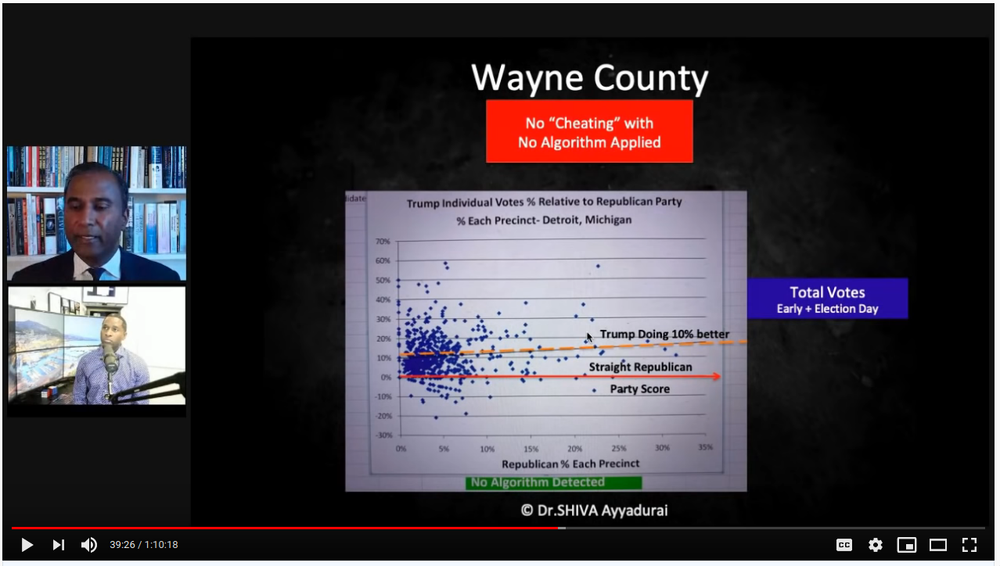
This is followed by showing Kent county, where the algorithm is alive and well:
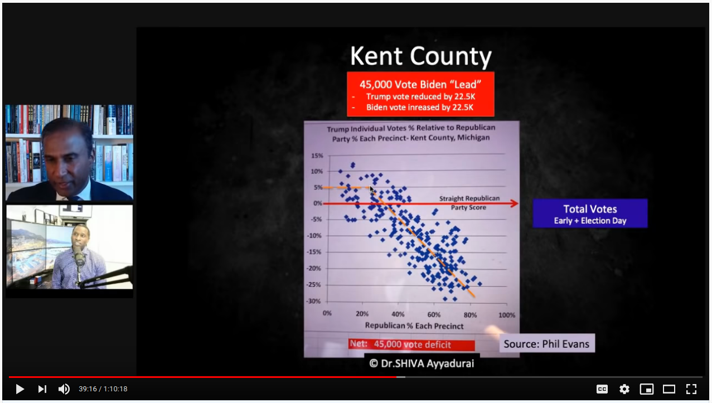
But note the axes. At a guess, I'd say 80% of Wayne county precincts are <10% straight-R voters, and the axis stops at 35%. Kent county goes all the way up to 80% straight-R, and the axis extends to 100%. Look at Kent straight-R < 35%, right where the elbow is in the fit line. That's essentially where all of Wayne county's data is. It's not "the algorithm" that isn't at play; the precincts are simply below high straight-R territory where we the pre-determined mathematical pattern will always be observed.
This is also good point to show a corollary. What about that Trump "boost"? As the straight-R percent declines, you descend below the general population sentiment, so you're bound to have a higher Trump % among direct voters than the straight-R %. Wayne county was 30.7% Trump, which is much higher than the 0-10% straight-R % for most precincts.
validating
My favorite approach to these things is to just try them myself. Can we? Straight ticket
data seems sparse, but I managed to find a report with data from Texas. It covered
straight ticket votes in 47 counties amounting to 83% of the overall Texas votes in 2008
(pdf). Without too much work, I extracted the main table with pdftotext, pasted it
into a spreadsheet, and paired it with the overall TX results per county (data). Plotting
with their method, what do we find?
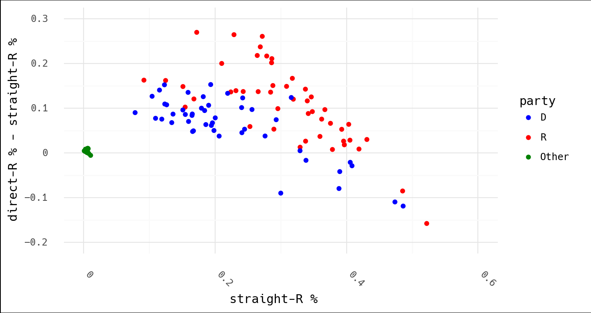
In light of Dr. Shiva's following conclusion, consider that this is Texas, which had an overall result of 55.5% McCain to 43.7% Obama in 2008:
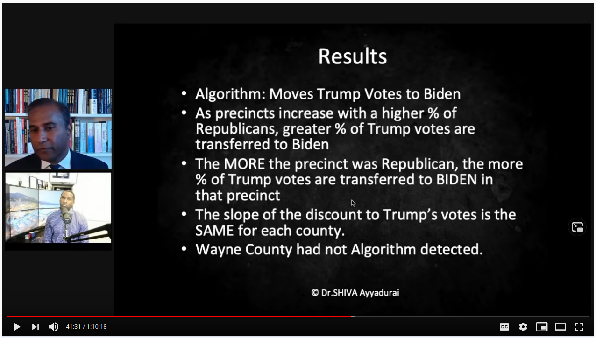
Surely the argument isn't that McCain won Texas by fraud (Obama's trend is lower and therefore shows that "the algorithm" took more of his votes)? Or that that algorithm was stealing votes from both (why would they both follow this suspicious, downward trend)? And why did the algorithm kick in so early with the independent candidates? For what it's worth, FiveThirtyEight was extremely accurate in 2008, and Texas wasn't even listed as a swing state. Why risk cheating when you don't need to?
Indeed, none of these things make sense. This is what one would expect these plots to look like in the first place.
final thoughts
Here are some notable aspects of fraud theries appearing to leverage math and/or data I've noticed:
- the analysis focuses on one year. What is the historical context for this metric? Is this actually unique? What trends or patterns have existed over time?
- the evaluation is conducted for only one candidate. Note what my plot would look like above with Obama or McCain removed. Indeed, with only Trump shown and the many invented examples slipped in of what these supposedly shood look like, it paints the picture that the data is unique to Trump.
- only instances unfavorable to a certain candidate are evaluated. While the analysis is presented behind a mask of virtue and integrity… no justice is sought where the desired result was obtained (yet the "suspicious" pattern occurred). In addition, if pattern X means "fraud," how can it it appear everywhere?
- lastly, the metric used (e.g. straight vs. direct-straight) is never justified; ask yourself if you've ever heard what this relationship is supposed to be?
This last point is key. I'm sure a different term already exists for this concept, but I've been thinking of this as "argument by inception." You were never suspicious of this metric, pattern, ratio, etc. before someone told you it was odd. Once suggested, it's hard to shake despite zero evidence being presented to justify it.